Office Chase
A fast-paced top-down corporate pursuit through a furnished cubicle floor: fleeing guards, toppled desks, spilled water coolers, and smashed equipment. Every piece of furniture, destruction state, ambient loop, and character sprite was authored and rigged inside Pixel Art Studio.
66.0 s duration
3,958 frames at 60 fps
6 destructible prop states
4 ambient loop sets
100% native pixel art
The complete 66-second chase sequence in full 60 fps action.
Environment & Destruction Aftermath
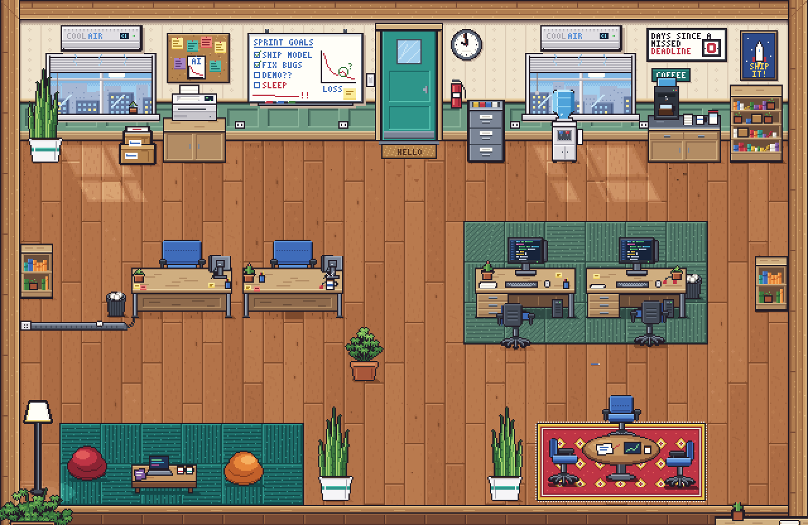
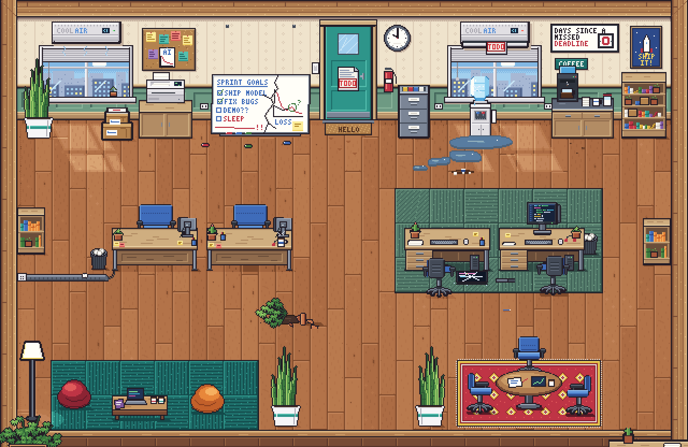
Destructible Prop Stages
Interactive scene objects authored with multiple damage phases, particle fragments, and ground decal states:
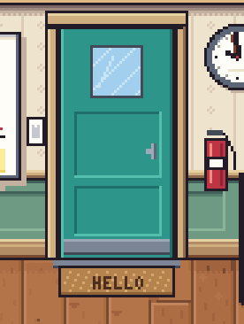
Breach Door Door kicks open with wood splinter decals and frame strain.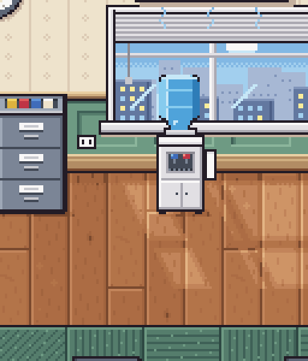
Water Cooler Bottle ruptures on impact with spreading floor puddle decals.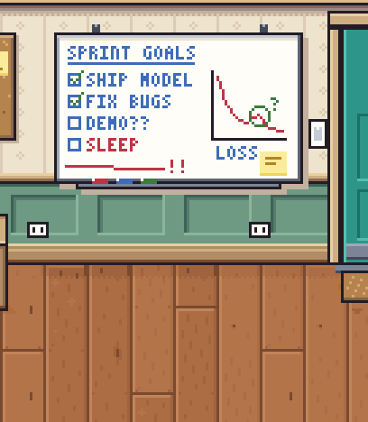
Whiteboard Spun and knocked flat, scattering markers and paper.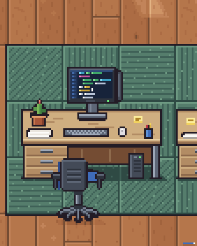
CRT / Monitor Screen cracks with electric sparks and shattered glass fragments.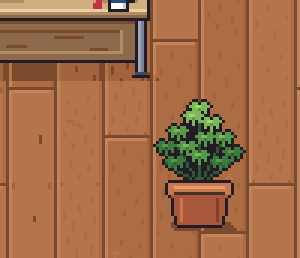
Ceramic Planter Clay pot shatters into shards, scattering potting soil.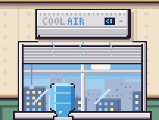
Air Conditioner Grille rips free with venting steam puffs and loose wiring.Ambient Office Loops
Subtle background animations that give the office space life before the chase begins:
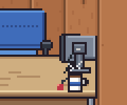
Coffee Mug Steaming warm mug sitting beside desk work.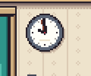
Wall Clock Sweeping second hand keeping precise office hours.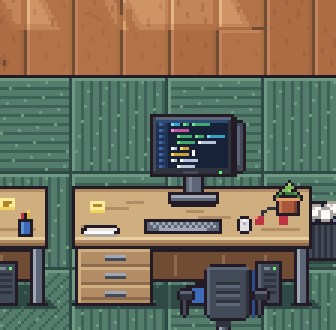
Workstation Terminal Blinking cursor and scrolling code diagnostics.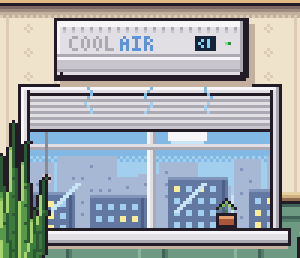
Overhead Vent Subtle vibration and swaying marker ribbon.